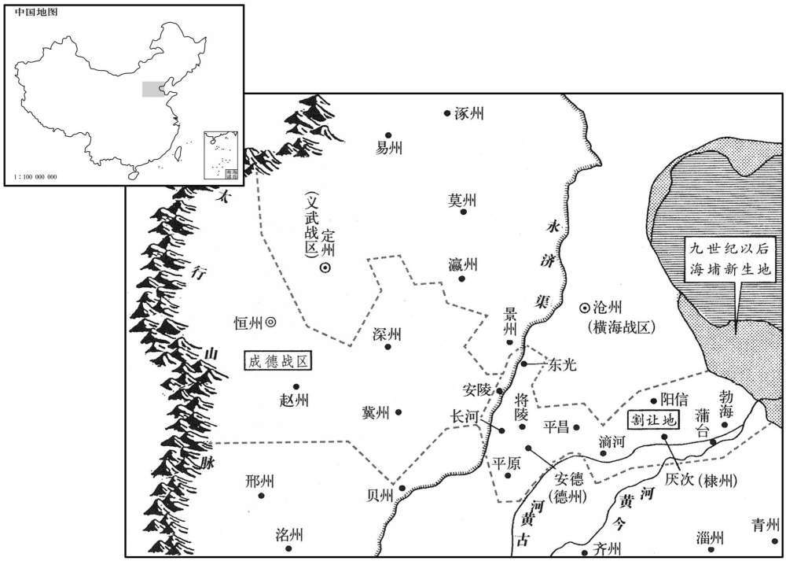
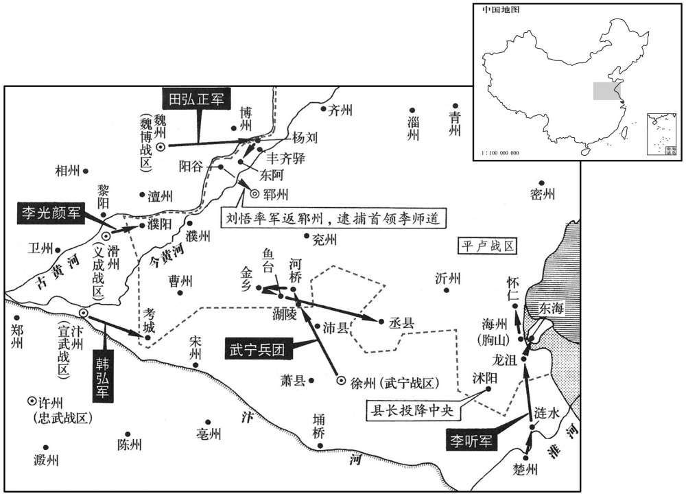

公元818年资治通鉴：本年记事、原文与白话对照
按原书编年位置阅读；追叙和史论不等于本年发生的事件。白话采用所据译本，缺译不以生成译文补齐。
卷240 · 本年记事
公元818年 · 唐宪宗昭文章武大圣至神孝皇帝元和十三年
十三年〔（戊戌、八一八）〕
上传原文的注释括号有异常，字符原样保留；无法可靠划分的段落默认全文显示。
本年事件索引（现代整理）
- 宪宗大赦天下
- 李师道杀害劝其归顺的高沐等人
- 李师道因淮西平定而惧，请求献沂密海三州
- 宪宗命六军修缮麟德殿，张奉国、李文悦因谏营建被贬
- 李愬奏请授予部属一百五十人官职，宪宗留中不下
- 李墉辞相，宪宗任李夷简为同平章事
- 渤海王大言义卒，弟大明忠及从父大仁秀先后继位
- 程权请入朝未获横海将士允许，经林蕴劝说方得离镇
- 柏耆劝说王承宗献德棣二州并送子入朝
- 谭忠劝刘总归顺朝廷
- 宪宗赐左、右三军辟仗使废印以授印行事
- 宪宗诏令恢复王承宗及成德将士官爵
- 李师道听信妻妾奴婢劝说，囚禁并杀害李英昙
- 李逊赴郓州责令李师道纳质献地，李师道反悔后宪宗决意讨伐
- 贾直言多次冒死劝谏李师道，被囚禁
- 宪宗任李光颜为义成节度使以讨伐李师道
- 宪宗册封大仁秀为渤海王
- 曹华击退平卢军并复取棣州
- 六月朔发生日食
- 宪宗任乌重胤兼领怀州、镇守河阳
- 宪宗任李光颜为武宁节度使
- 宪宗下诏数列李师道罪状并命五镇进讨
- 裴度专掌讨伐事务，李夷简请求出镇淮南
- 宪宗罢王涯为兵部侍郎
- 韩弘自率兵马攻打李师道并围曹州
- 皇甫镈、程异同平章事，朝野惊愕
- 裴度、崔群极力反对皇甫镈入相，裴度上疏批评
- 皇甫镈提议削减内外官员俸禄，被给事中封还
- 皇甫镈高价收购内库朽帛充边军军需，裴度揭发后反遭驳斥
- 五坊使杨朝汶违法捕人索债，宪宗赐死并释放被系者
- 宪宗晚年好神仙，命柳泌在兴唐观炼药
- 吐蕃寇河曲、夏州，灵武军攻取长乐州外城
- 柳泌称天台山有灵药，宪宗授其台州刺史
- 盐州奏报吐蕃退去
- 宪宗任乌重胤为横海节度使，令狐楚接任河阳节度使
- 裴度建议田弘正留在河北养势，田弘正率军渡河进逼郓州
- 宪宗遣使迎取法门寺佛骨
- 宪宗任董重质为试太子詹事
- 朝廷释放魏博、义成军所获李师道部将并准其归乡
- 李师道任用李文会而疏远兄长李元规，危急时又将其外放
- 裴度对宪宗阐述君子同德、小人结党的区别
- 李愬连战平卢军皆捷并攻克金乡

本年形势与背景参考图
春，正月，乙酉朔，赦天下。
春季，正月，乙酉朔（初一），大赦天下。
初，李师道谋逆命，判官高沐与同僚郭昈、李公度屡谏之。〔昈，侯古翻。考异曰：传又有郭航名。按航，乃牙将，昈所使诣李愿者，非幕僚同谏者也。今从河南记。〕判官文会、孔目官林英素为师道所亲信，涕泣言于师道曰：「文会等尽心为尚书忧家事，〔心为，于伪翻。〕反为高沐等所疾，尚书柰何不爱十二州之土地，〔十二州，郓、兖、曹、濮、淄、青、齐、海、登、莱、沂、密也。〕以成沐等之功名乎！」师道由是疏沐等，出沐知莱州。〔莱州，古莱子之国，后魏置光州，隋改莱州。〕会林英入奏事，令进奏吏密申师道云：「沐潜输款于朝廷。」文会从而构之，师道杀沐，井因郭昈，凡军中劝师道效顺者，文会皆指为高沐之党而囚之。
当初，李师道策划叛逆时，判官高沐与同僚郭、李公度屡次劝阻他。判官李文会与孔目官林英平时为李师道所亲近信任，他们哭泣着向李师道进言说：“我等竭尽心力为您操持家中事务，反而遭到高沐等人的忌恨，您怎么能够不爱惜淄青的十二州土地，反而要成就高沐等人的功劳与名声呢！”从此，李师道便疏远了高沐等人，还斥逐高沐前去代理莱州事务。适值林英入朝奏报事情，便让呈进奏疏的吏人暗中报告李师道说：“高沐偷偷地向朝廷表示诚意。”李文会借此设计陷害高沐，于是李师道便杀死高沐，并且囚禁了郭，凡是劝说李师道投诚的军中将领，李文会一概将他们指斥为高沐的同伙，将他们囚禁起来。
及淮西平，师道忧惧，不知所为。李公度及牙将李英昙〔昙，徒含翻。〕因其惧而说之，使纳质献地以自赎。〔说，式芮翻。质，音致。〕师道从之，师道从之，遣使奉表，请使长子入侍，井献沂、密、海三州。上许之。乙巳，遣左常侍李逊诣郓州宣慰。
及至淮西平定后，李师道既担忧，又恐惧，不知道应该怎样应付。李公度以及牙将李英昙乘着李师道内心恐惧来劝说他，让他向朝廷交纳人质、进献土地，以此赎罪。李师道听从了他们的意见，派遣使者上表，请求让他的长子入朝侍卫，并且献出沂、密、海三州，宪宗应允了他的请求，乙巳（二十一日），宪宗派遣左常侍李逊前往郓州安抚将士。
上命六军修麟德殿；右龙武统军张奉国、大将军李文悦〔大将军，即右龙武大将军。〕以外寇初平，〔谓淮西初平。〕营缮太多，白宰相，有冀有论谏；裴度因奏事言之。上怒，二月，丁卯，以奉国为鸿胪卿，壬申，以文悦为右武卫大将军，〔既出奉国于外朝，文悦又自北门诸卫迁南牙诸卫胪，陵如翻。〕充威远营使。〔威远营，亦非北军也。于是浚龙首池，起承军殿，土木浸兴矣。〔大明宫东面有东内苑，苑中有龙首殿。龙首池，龙首渠水自城南而注入于此池。宋白曰：龙首殿在右军。〕
宪宗命令六军整饰麟德殿。右龙武统军张奉国与大将军李文悦认为淮西刚刚平定，修建工程太多，便禀告宰相，希望宰相能够陈论劝阻。裴度因而在奏报事情时讲到了这一问题，宪宗大怒。二月，丁卯（十三日），宪宗任命张奉国为鸿胪卿。壬申（十八日），任命李文悦为右武卫大将军，充任威远营使。于是，疏浚龙首池、兴建承晖殿，土木工程逐渐兴起了。
李愬奏请判官、大将以下官凡百五十员；上不悦，谓裴度曰：「李愬诚有奇功，然奏请过多。使如李晟、浑瑊，又何如哉！」遂留中不下。〔下，户嫁翻。〕
李上奏请求朝廷任命判官、大将以下的官员计有一百五十员，宪宗不甚高兴，便对裴度说：“李诚然立下了奇功，但上奏请求任命的官员太多了。假使他立下李晟、浑那样的功劳，又该怎么办呢！”于是，宪宗将李的奏疏留在禁中，不再下达。
李墉固辞相位戊戌，以墉为户部尚书。以御史大夫李夷简为门下侍郎、同平章事。
李坚决推辞宰相的职位，戊戌（疑误），宪宗任命李为户部尚书，任命御史大夫李夷简为门下侍郎、同平章事。
初，渤海僖王言义卒，弟简王明忠立，改元太始；一岁卒，从父仁秀立，改元建兴。乙巳，遣使来告丧。
当初，渤海僖王大言义去世，他的弟弟简王大明忠即位，更改年号为太始。大明忠在位一年便去世了，他的叔父大仁秀即位，更改年号为建兴。乙巳（疑误），大仁秀派遣使者前来通报丧事。
横海节度使程权自以世袭沧景，〔德宗始命程日华为横海帅，传子怀直，为从兄怀信所逐。怀信死，子权嗣为帅。〕与河朔三镇无殊，内不自安；己酉，遣使上表，请举族入朝，许之。横海将士乐自擅，〔乐，音洛。〕不听权去，掌书记林蕴谕以祸福，权乃得出。诏以蕴为礼部员外郎。
横海节度使程权认为自己世代承袭沧景节度使的职务，与河朔三镇没有区别，内心感到不安。己酉（疑误），程权派遣使者上表，请求全家族入京朝见，宪宗答应了他的请求。横海将士喜欢自占一方，不肯让程权离去，掌书记林蕴向大家讲明祸福的道理，程权才得以离开横海。宪宗颁诏任命林蕴为礼部员外郎。
裴度之在淮西也，布衣柏耆策干韩愈曰：「吴元济既就擒，王承宗破胆矣，愿得奉丞相书往说之，〔说，式芮翻。〕可不烦兵而服。」愈白度，为书遣之。承宗惧，求哀于田弘正，请以二子为质，〔质，音致。〕及献德、棣二州，输租税，请官吏。弘正为之奏请，〔为，于伪翻。〕上初不许；弘正上表相几，〔上表，时掌翻。〕上重违弘正意，乃许之。夏，四月，甲寅朔，魏博遣使送承宗子知感、知信及德、棣二州图印至京师。
裴度坐镇淮西时，平民柏耆向韩愈献计说：“吴元济被擒获后，王承宗吓破了胆。我希望携带裴丞相的书信前去劝说他，可以不用烦劳兵马便使他归服。”韩愈禀告了裴度，裴度便写了书信，让他前往。王承宗害怕，向田弘正乞怜，请求以两个儿子作为人质，并将德、棣二州献给朝廷，向朝廷交纳赋税，请朝廷任命官吏。田弘正为他上奏请求，宪宗起初不肯答应。田弘正便一次接一次地上表，宪宗不愿意违背田弘正的心意，便答应了他。夏季，四月，甲寅朔（初一），魏博派遣使者将王承宗的儿子王知感和王知信以及德、棣两州的版图与印符送到京城。
幽州大将谭忠说刘总曰：〔说，式芮翻。〕自元和以来，刘辟、李锜、田季安、卢从史、吴元济，阻兵冯险，〔冯，读曰凭。〕自以为深根固蔕，〔蔕，丁计翻。〕天下莫能危也。然顾盼之间，身死家覆，皆不自知，此非人力所能及，殆天诛也。况今天子神圣威武，苦身焦思，〔思，相吏翻。〕缩衣节食，〔缩，敛也，短也。〕以养战士，此志岂须臾忘天下哉！今国兵骎骎北来，〔国兵，谓王师也。骎骎，马行疾貌。〕赵人己献城十二，〔德州领安德、长河、平原、平昌、将陵安陵六县。棣州领厌次、滴河、阳信、蒲台、渤海杅县。程权之退，承宗又取景州之东光，今皆以归朝廷，故曰献城十二。〕忠深为公忧之。」为，于伪翻。〕总泣且拜曰：「闻先生言，吾心定矣。」遂专意归朝廷。
幽州大将谭忠劝说刘总说：“自从元和年间以来，刘辟、李、田季安、卢从史、吴元济等人依仗着手中的军队，凭借着险要的地形，自认为根基坚牢得不可动摇，天下的兵力都不能危害他们。然而，正在他们得意地左顾右盼时，却身败家亡，还全然不知道事情是怎样发生的。这不是个人的力量所能够做到的，恐怕是上天要诛戮他们吧。况且，当今的天子神圣威武，竭力操劳，忧心苦思，节俭衣食，以赡养战斗之士，有这样的志向，怎么会有片刻忘记天下呢！现在，官军迅速向北开进，王承宗已经向朝廷献上十二座城邑，我是深切地为您担忧啊。”刘总一边哭泣，一边行着礼说：“听了先生这一席话，我的主意已定了。”于是，刘总一心一意地归向朝廷。
戊辰，内出废印二妞，赐左、右三军辟仗使。〔龙武、神武、羽林三军各分左、右。辟，读如辟。〕旧制，以宦官为六军辟仗使，如方镇之监军，无印。监军有印，见二百三十五卷德宗贞元十一年。宋白曰：旧制，内官为三军辟仗使，监视刑赏、奏察违谬，犹方镇之监军使。〕及张奉国得罪，至是始赐印，得纠绳军政，事任专达矣。
本段缺少可靠对应白话，原文完整保留；未使用生成译文。
庚戌，〔【章：甲十一行本「戌」作「辰」；乙十一行本同；张校同，云无注本作「戌」，按是月甲寅朔，无庚戌。】〕诏洗雪王承宗及成德将士，复其官爵。〔削王承宗官见上卷十一年。
两版字句有差异，建议核对原文。
庚戌（疑误），宪宗颁诏为王承宗以及成德将士平反，恢复他们的官职与爵位。
李师道暗弱，军府大事，独与妻魏氏、奴胡惟堪、杨自温、婢蒲氏、袁氏及孔目官王再升谋之，大将及幕僚莫得顶烈焉。魏氏不欲其子入质，〔质，音致。〕与蒲氏、袁氏言于师道曰：「自先司徒以来，有此十二州，〔李正己初据有十五州。及李纳拒命，徐州入于朝，德、棣入于朱滔，有十二州巳。先司徒，谓李纳也。〕奈何无故割而献之！今计境内之兵不下数十万，不献三州，不过以兵相加。〔三州，谓请献沂、密、海。〕若力战不胜，献之未晚。」师道乃大悔，欲杀李公度，幕僚贾直言谓其用事奴曰：「今大祸将至，岂非高沐冤气所为！若又杀公度，军府其危哉！」乃囚之。迁李英昙于莱州，未至，缢杀之。
李师道愚昧而又懦弱，对于幕府中重大的事情，只与妻子魏氏、家奴胡惟堪、杨自温、婢女蒲氏和袁氏以及孔目官王再千等人谋划，大将以及幕府的僚属都不能参与。魏氏不愿意让自己的儿子入朝充当人质，便与蒲氏和袁氏向李师道进言说：“从我们已故的司徒以来，李氏便据有了这十二个州，怎么能够毫无原由地献给朝廷呢！现在，算来淄青境内的兵力不少于数十万人，不进献沂、密、海三州，朝廷只不过派兵马前来讨伐。倘若尽力接战不能够取胜，那时再献上三州也不算太迟。”于是，李师道非常后悔，打算将李公度杀掉。幕府的僚属贾直言对李师道管事的家奴说：“现在大祸将要来临了，这难道不是高沐的冤气造成的吗！如果再将李公度杀掉，恐怕幕府就危险了！”于是，李师道便将李公度囚禁起来，将李英昙贬至莱州。李英昙还没有到任，便被勒死了。
李逊至郓州，师道大陈兵迎之，逊盛气正色，为东祸福，〔为，于伪翻。〕责其决语，〔决语，决为，一定之说，不依违持两端。〕欲白天子。师道退，与其党谋之，皆曰：「弟许之，〔弟，与弟同。〕他日正烦一表解纷耳。」师道乃谢曰：「向以父子之私，且于将士之情，故迁延未遣。今重烦朝使，岂敢复有二三！」〔重，直用翻。朝，直遥翻。使，疏吏翻。复，扶又翻。朝使，谓朝廷所遣使者。〕逊察师道非实诚，归，言于上曰：「师道顽愚反复，恐必须用兵。」既而师道表这「军情不听纳质割地。」上怒，决意讨之。
李逊来到郓州时，李师道布列盛大军容迎接他。李逊神色严肃，向他陈说孰祸孰福，要求他一言为定，准备禀报宪宗。李师道回去后，与他的同党商议此事，同党们都说：“尽管答应他好了，以后只要麻烦一纸书表来排解纷乱罢了。”于是，李师道向李逊道歉说：“以往由于父子间的私情，并且迫于将士的压力，所以把事情拖延下来，没有遣送儿子入朝。现在，又麻烦朝廷的使者为此奔走，怎么敢再做反复无常的事情呢！”李逊看出李师道没有诚意，回到朝廷后，便向宪宗进言说：“李师道顽劣愚昧，反复无常，恐怕必须用兵了。”不久，李师道上表陈述军中情形，说是将士们不肯让他交送人质与割让土地。宪宗大怒，决心讨伐李师道。
贾直言冒刃谏师道者二，舆榇谏者一，又画缚载车妻子系累者以献；师道怒，囚之。
贾直言冒着被杀害的危险向李师道劝谏了两次，抬着棺材向李师道劝谏了一次，还画了一幅李师道被绑在囚车里、妻子儿女都被缚结着的图画献给李师道。李师道恼怒，便将他囚禁起来。
五月，内申，以忠武节度使李光颜为成节度使，〔李光颜自许州徙镇滑州。〕谋讨师道也。以淮西节度使马总为忠武节度使、陈．许．冢．蔡州观察使。以申州隶鄂岳，光州隶淮南。〔不复以蔡州为节槙。〕
五月，丙申（十三日），宪宗任命忠武节度使李光颜为义成节度使，谋划讨伐李师道。又任命淮西节度使马总为忠武节度使和陈、许、、蔡各州观察使，将申州隶属给鄂岳，将光州隶属给淮南。
辛丑，以知勃海国务大仁秀为勃海王。
辛丑（十八日），朝廷将主持勃海国事务的大仁秀封为勃海王。
以河阳都佑兵马使曹华为棣州刺史，诏以河阳兵〔【章：甲十一行本「兵」下有「二千」二字；乙十一行本同；退斋校同。】〕送至滴河。〔滴河，汉千乘湿沃县地，隋开皇十六年置滴河县，废湿沃入焉，唐属棣州。九域志：在州西南八十里。汉都尉许商凿此通海，故以商河为名，后人加水焉。宋白曰：县南有滴河，因以为名。〕会县为平卢兵所陷，〔平卢兵，李师道之兵也。〕华击却之，杀二千余人，复其县以闻；诏加横海节度副使。
宪宗任命河阳都知兵马使曹华为棣州刺史，降诏命令河阳兵马将他护送到棣州的河县。适逢河县被平卢李师道的兵马攻陷，曹华将平卢兵马击退，杀掉两千多人，收复了该县，上报朝廷。宪宗颁诏加封曹华为横海节度副使。

六月，癸丑朔，日有食之。
六月，癸丑朔（初一），出现日食。
丁王，复以乌重胤领怀州刺史，镇河阳。〔淮西巳平，故乌重胤自汝州复还镇河阳。〕
丁丑（二十五日），宪宗又任命乌重胤兼任怀州刺史，镇守河阳。
秋，七月，癸未朔为武宁节度使。
秋季，七月，癸未朔（初一），宪宗将李改任为武宁节度使。
乙酉，下制罪状李师道，令宣武、魏博、义成、武宁、横海兵共讨之，以宣歙观察使迋遂为供军使。遂，方庆之孙也。〔王方庆，武后圣历中为相。歙，书涉翻。〕
乙酉（初三），宪宗颁布制书罗列李师道的罪状，命令宣武、魏博、义成、武宁、横海的兵马共同讨伐他，还任命宣歙观察使王遂为供军使。王遂是王方庆的孙子。
上方委裴度以用兵，门下侍郎、同平章事李夷简自谓才不及度，求出镇。辛丑，以夷简同平章事，充淮南节度使。
宪宗将用兵之事委托给裴度，门下侍郎、同平章事李夷简认为自己的才能不如裴度，便要求出任节度使。辛丑（二十八日），宪宗任命李夷简为同平章事，充任淮南节度使。
八月，壬子朔，中书侍郎、同平章事王涯罢为兵部侍郎。
八月，壬子朔（初一），中书侍郎、同平章事王涯被罢免为兵部侍郎。
吴元济既平，韩弘惧，九月，自将兵击李师道，围曹州。
吴元济被平定后，韩弘心怀恐惧。九月，韩弘亲自带领兵马进击李师道，包围曹州。
淮西既平，上浸骄侈。户部侍郎度支皇甫镈、卫尉卿．盐铁转运〔【章：甲十一行本「运」下有「使」字；乙十一行本同。】〕程异晓其意，数进羡余以供其费，〔史言镈、异逢君之恶。数，所角翻。羡，弋线翻。〕由是有宠。镈又以厚赂结芏突承璀。甲辰，镈以本官、异以工部侍郎并同平章事，判使如故。〔皇甫镈以户部侍郎相，判度支如故。程异进贰起部以相，盐铁转运使如故。〕制下，朝野骇愕，至于市井负贩者亦嗤之。〔下，户稼翻。嗤，丑之翻，笑也。〕
平定淮西后，宪宗逐渐骄傲奢侈起来。户部侍郎、判度支皇甫与卫尉卿、盐铁转运使程异晓得宪宗的心意，屡次进献额外税收，供给宪宗花销，因此两人都得到宪宗的宠爱。皇甫还用大量的贿赂来交结吐突承璀。甲辰（二十三日），皇甫以本来的官职，程异以工部侍郎的职务一并同平章事，兼任使职一如既往。制书颁布后，朝廷与民间都感到惊异，连市肆中担货贩卖之人也在嗤笑他们。
裴度、进群极陈其不可，上不听。度耻与小人同列，表求自退；不许。度复上疏，〔复，扶又翻。上，时掌翻。〕以为；「镈、异皆钱谷吏，佞巧小人，陛下一旦置之相位，中外无不骇笑。况镈在度支，专以丰取刻与为务，凡中外仰给度支之人无不思食其肉；〔卯，牛向翻。〕比者裁损淮西粮料，〔比，毗至翻，近也。谓讨吴元济时裁损淮西行营诸军粮料。〕军士怨怒；会臣至行营晓谕慰勉，仅无溃乱。今旧将旧兵悉向淄表，〔谓旧所遣讨蔡之将，讨蔡之兵，悉遣之讨李师道。〕闻镈入相，必尽惊忧，知无可诉之地矣。〔言镈在度支，减刻粮赐，军士犹可诉之于庙堂，今既为相，无可诉之地矣。〕程异虽人品庸下，然心事和平，可处烦剧，不宜为相。〔处，昌吕翻；下同。〕至如镈，资性狡诈，天下共知，唯能上惑圣聪，足见奸邪之极。〔言宪宗英明且为所惑，可以见其极奸邪。〕臣若不退，天下谓臣不知廉耻；臣若不，言天下谓臣有负恩宠。今退既不许，言又不听，臣如烈火烧心，众镝丛体。所可惜者，淮西荡定，河北底宁，承宗敛手削地，〔谓献德、二州。〕韩欠舆疾讨贼，〔谓自将讨李师道。〕岂朝廷之力能制其命哉﹖直以处置得宜，能服其心耳。；陛下建升平之业，十已八九，何忍还自堕坏，〔堕，读曰隳。坏，音怪。〕使四方解体乎！」上以度为朋党，不之省。〔省，悉景翻。〕
裴度与崔群极力陈述任命二人为相是不适当的，宪宗不肯听从。裴度以与小人同事为耻辱，上表请求自行引退，宪宗不肯答应。裴度又上疏认为：“皇甫与程异都是掌管钱财与谷物的官吏，是奸诈机巧的小人，陛下突然将他们安置在宰相的职位上，朝廷内外没有人不诧异、不讥笑的。何况，皇甫掌管度支，专作多取少给的事情，凡是朝廷内外需依赖度支供给的人们，无人不想吃他的肉。近来，皇甫裁减淮西官员的禄粮，惹得将士们愤怨不满。适值我来到淮西行营开导、劝慰和勉励他们，这才没有发生溃散作乱的事情。现在，那些原来讨伐淮西的将士全部开向淄青，得知皇甫担任宰相后，肯定人人惊惶忧恐，知道自己没有可以申诉的地方了。程异虽然人品平庸低下，但是考虑事情心平气和，可以让他处理繁杂的事务，不适合出任宰相。至于皇甫，天性狡猾诡诈，天下无人不知，唯独能够使陛下的明察善断受到迷惑，足以看出他奸佞邪恶到了极点。倘若我不肯引退，天下的人们便要说我不知廉耻了；倘若我不发言，天下的人们就会说我辜负了陛下的恩宠。现在，陛下既不允许我引退，又不肯听从我的意见，我感到就象烈火烧心，乱箭穿身。可惜的是，淮西荡平，河北归于安宁，王承宗拱手割让土地，韩弘抱病登车讨伐贼人，难道是朝廷的力量能够控制他们吗？只是因为对他们安排处理得当，能够使他们心服而已。陛下建立天下太平的基业，已经达到了十分之八九，怎么能够忍心再自行毁坏，使各地心灰意冷呢！”宪宗认为裴度属于朋党集团，对他的意见便不肯予以考虑。
镈自知不为众所与，益为巧谄以自固，奏减内外官俸以助国用；给事中进植封还敕书，极论之，乃止。植，佑甫之弟子也。〔崔佑甫相德宗，有可称者。〕
皇甫知道自己不被大家所赞同，愈发作巧伪阿谀的事情来巩固自己的地位，奏请削减朝廷内外官员的薪俸来资助国家的用度。给事中崔植将诏书封合退还，经过极力论说，才没有实行皇甫的建议。崔植是崔甫弟弟的儿子。
时内出积年缯帛付度支令卖，镈悉以高价买之，以给边军。其缯帛朽败，随手破裂，边军聚而焚之。〔缯，慈陵翻。〕度因奏事言之，镈于上前引其足曰：「此靴亦内库所出，以钱二千买之，坚完可久服。度言不可信。」上以为然。〔引足于君前，不敬大矣。宪宗溺于利，不惟不察其慢，又且然其言。〕由是镈益无所惮。〔为镈得罪张本。〕程异亦自知不合众心，能廉谨谦逊，为相月余，不敢知印秉笔，〔时宰相更日知印秉笔。〕故终免于祸。
当时，内廷拿出积存多年的丝帛交付度支出卖，皇甫用高价全部买下了这些丝帛，用以供给边疆的军队。那些丝帛朽蚀腐败，用手一碰，就会破裂，边疆军队将这些丝帛堆积起来烧掉了。裴度借奏报事情的机会谈到此事，皇甫在皇帝面前伸出他的脚来说：“这双靴子也是由内库中来的，我用两千钱买下了它们。这靴子坚固结实，可以穿很长时间。裴度说的话并不可信。”宪宗认为讲得很对。从此，皇甫更加无所忌惮了。程异也知道自己不得人心，但是他能够廉洁谨慎，谦逊自抑。他出任宰相一个多月，不敢掌管印信，执笔断事，所以最终得以免除祸殃。
五坊使杨朝汶〔汶，音问。〕妄捕系人，迫以考捶，责其息钱，遂转相诬引，所系近千人。〔捶，止翻。近，其靳翻。〕中丞萧俛勷劾奏其状，〔俛，音免。劾，汉书音义户概翻，今音户得翻。〕裴度、崔群亦以为言。上曰：「姑与卿论用兵事，〔姑，且也。〕此小事朕自处之。」〔处，昌吕翻。〕度曰：「用兵事小，所忧不过山东耳；五坊使暴横，恐乱辇毂。」〔横，户孟翻。史照曰：毂者，辐所凑也。京都四方所辐凑，以辇毂取喻。余按汉书，京兆尹率自言待罪辇毂下，谓京兆在天子辇毂之下耳。〕上不悦，退，召朝汶责之曰：「以如故，令吾羞见宰相！」冬，十月，赐朝汶死，尽释系者。
五坊使杨朝汶胡乱捉拿囚禁百姓，刑讯拷打，索取利钱，使他们相互诬告牵连，被拘禁的将近一千人。中丞萧上奏揭发这一状况，裴度与崔群也就此进言。宪宗说：“朕且与你们谈论用兵的大事，这点小事由朕自己处理。”裴度说：“用兵的事情才是小事，让人担忧的不过是崤山以东而已。而五坊使强暴蛮横，恐怕会扰乱京城。”宪宗不高兴。退朝后，宪宗传召杨朝汶，斥责他说：“由于你的原故，让我不好意思见宰相！”冬季，十月，宪宗赐杨朝汶自裁而死，将他囚禁的人全部释放。
上晚节好神仙，〔好，呼到翻。〕诏天下求方士。宗正卿李道古先为鄂岳观察使，以贪暴闻，恐终获罪，思所以自媚于上，乃因皇甫镈荐山人柳泌，云能合长生药。甲戌，诏泌居兴唐观炼药。〔合，音合。唐会要：兴唐观，本司农园地，在长桨坊，开元十八年造。李道古荐柳泌以求媚免罪，不知商足重罪也，泌既诛而道古亦贬矣。为上服泌药致疾张本。泌，薄必翻，又兵媚翻。〕
宪宗晚年喜欢神仙不老之术，颁诏在全国寻求方术之士。宗正卿李道古先前担任鄂岳观察使，以贪婪残暴闻名，担心终究要被治罪，寻求向皇上献媚的办法，于是通过皇甫，推荐山人柳泌，说他能够制作长生的药物。甲戌（二十四月），宪宗颁诏让柳泌住在兴唐观中炼制药物。
十一月，辛巳朔，盐州奏吐蕃寇河曲、夏州。灵武奏破吐蕃长乐州，克其外城。〔吐蕃长乐州当在灵州黄河外，定远城之西。夏，户雅翻。乐，音洛。〕
十一月，辛巳朔（初一），盐州奏称吐蕃侵犯河曲与夏州，灵武奏称在长乐州打败吐蕃，攻克了长乐州的外城。
柳泌言于上曰：「天台山神仙所聚，〔新志：台州唐兴县有天台山，宋朝改唐兴为天台县。天台山在县西一百一十里。临海记：天台山超然秀出，山有八重，视之如一，高一万八千丈，周回八百里。〕多灵草，臣虽知之，力不能致，诚得为彼长吏，庶几可求。」上信之。〔长，知丈翻。几，居希翻。〕丁亥，以泌权知台州刺史，〔台州，汉回浦县地，会稽东部都尉理所，光武改回浦为章安县，吴分章安置临海县，唐武德四年置海州，五年改台州，因天台山为名。〕仍赐服金紫。谏官争论奏，以为：「人主喜方士，〔喜，许记翻。未有使之临民赋政者。」〔赋，布也。〕上曰：「烦一州之力而能为人主致长生，〔为，于伪翻。〕臣子亦何爱焉！」由是群臣莫敢言。
柳泌向宪宗进言说：“天台山是神仙聚集的地方，有许多灵草，虽然我能够识别，但是没有力量将它们弄到手。如果我能够去做那里的长官，可能会找到它们。”宪宗相信了他的话。丁亥（初七），宪宗让柳泌权且代理台州刺史，还赐给他金鱼袋和紫色的朝服。谏官争着上奏认为：“君主喜欢方术之士，但还没有让方术之士治理百姓，处理政务的先例。”宪宗说：“烦劳一个州的力量，就能够为君主带来长生，做臣子的又有什么可吝惜的呢！”从此，群臣都不敢谈论此事。
甲午，盐州奏吐蕃遁去。
甲午（十四日），盐州奏称吐蕃逃走。
壬寅，以河阳节度使乌重胤为横海节度使。丁未，以华州刺史令狐楚为河阳节度使。重胤以河阳精兵三千赴镇，河阳兵不乐去乡里，〔乐，音洛。〕中道溃归，又不敢入城，屯于城北，将大掠。令狐楚适至，单骑出，慰抚之，与俱归。
壬寅（二十二日），宪宗任命河阳节度使乌重胤为横海节度使。丁未（二十七日），任命华州刺史令狐楚为河阳节度使。乌重胤率领河阳精锐兵马三千人前往横海，河阳士兵不愿意离开家乡，中途溃散，返回河阳，又不敢进城，便在城北驻扎着，准备大肆抢劫。恰好令狐楚来到河阳，便单人匹马地出了城，前去慰问安抚他们，与他们一同回城。
先是，田弘正请自黎阳渡河，会义成节度使李光颜讨李师道，〔先，悉荐翻。〕裴度曰：「魏博军既渡河，不可复退，〔复，扶又翻。〕立须进击，方有成功。既至滑州，即仰给度支，〔义成节度使治滑州。魏博与滑州以河为界，兵至滑州为已出界。唐中世以来，藩镇兵征讨，已出境，刍粮皆仰给于度支。惟裴度用兵于东，李德裕用兵于上党，知其弊，有以制之。〕徒有供饷之劳，更生观望之势。又或与李光频互相疑阻，益致迁延。〔本栖不两雄，又有宾主之形，疑阻或生，何有不有，其患岂止于迁延之役！〕与其渡河而不进，不若养威于河北，得至阳谷置营，〔隋置阳谷县，以阳谷台为名，唐属郓州。九域志：在州西一百三十里。宋白曰。阳谷县，本汉须昌县地，今县界有须昌故城。〕则兵势自盛，贼众摇心矣。」〔上文言得至，恐兵有利钝也。此言贼众摇心，指其成效也。〕上从之。是月，弘正将全师自杨刘渡河，距郓州四十里筑垒；〔此自杨刘直进，不复迂其路至阳。旧史李师道传曰：距郓州九州岛九十里。田弘正传曰：四十里。考异曰：河南记云：〔营于阳谷西北。今从实录。〕贼中大震。
在此之前，田弘正请求由黎阳横渡黄河，会合义成节度使李光颜，前去讨伐李师道。裴度说：“魏博的军队渡过黄河后，就不能够再撤退回去，必须立刻进军出击，才能取得成功。魏博的军队来到滑州后，便要依靠度支供应，朝廷空有供给军饷的烦劳，魏博军却会重新产生观望的态势。田弘正或许再与李光颜互相猜疑，就益发会导致战机拖延。与其渡过黄河而不进军，还不如在黄河以北蓄养声威。应当让田弘正暂时饱喂战马，砥砺兵器，待到霜降后河水下落时，由杨刘横渡黄河，径直奔赴郓州，可以前往阳设置营盘，军队的声势自然就会变得盛大起来，敌军便会人心动摇了。”宪宗听从了裴度的意见。就在本月，田弘正率领全军由杨刘渡过黄河，在距离郓州四十里处修筑营垒，敌军大为震惊。
功德使上言：「凤翔法门寺塔有佛指骨，〔法门寺，在凤翔府岐山县。时功德使言法门寺有护国真身塔，塔内有释迦牟尼佛指骨一节。〕相传三十年十开，开则岁丰人安。来年应开，请迎之。」十二月，庚戌朔，上遣中使帅僧众迎之。〔帅，读曰率。〕
功德使进言说：“凤翔法门寺的塔中有释迦牟尼佛的手指骨，相传寺塔三十年开放一次，开放时就会年成丰熟，人民安宁。明年法门寺塔正当开放，请去迎接佛指骨。”十二月，庚戌朔（初一），宪宗派遣中使率领僧众迎接佛指骨。
戊辰，以春州司户董重质为试太子詹事，委武宁军驱使，李愬请之也。〔时徙李愬镇武宁以讨李师道。〕
戊辰（十九日），宪宗任命春州司户董重质为试太子詹事，将他交付武宁军驱遣，这是应李请求作出的决定。
戊寅，魏博、义成军送所获李师道都知兵马使夏侯澄等四十七人，上皆释弗诛，各付所获行营驱使，曰：「若有父母欲归者，优给遣之。朕所诛者，师道而已。」于是贼中闻之，降者继。〔降，户江翻。〕
戊寅（二十九日），魏博、义成两军将俘获的李师道的都知兵马使夏侯澄等四十七人送往京城，宪宗对他们一律释放不杀，分别交付俘获他们的行营以供驱遣，还说：“如果有人需要照料父母，打算回家，就从优发给盘费，打发他们回去。朕要诛杀的人，只有李师道一人罢了。”于是，敌军将士得知这一消息，前来投诚的人接连不断。
初，李文会与兄元规皆在李师古幕下，师古薨，师道立，〔薨、立，见二百三十七卷元年。〕元规辞去。文会属师道亲党请留，〔属，之欲翻。〕元规将行，谓文会曰：「我去，身退而安全；汝留，必骤贵而受祸。」及官军四临，平卢兵势日蹙，将士喧然，皆曰：「高沐、郭昈、李存为司空忠谋，〔为，于伪；下不为同。师道检校司空，故称之。〕文会奸佞，杀沐，囚昈、存，此致此祸。」师道不得已，出文会摄州刺史，召昈、存还幕府。
当初，李文会与哥哥李元规都在李师古的幕府中供事。李师古去世，李师道袭位，李元规辞职离去，李文会嘱托李师道的亲信同党请求把自己留下。李元规准备启行时，对李文会说：“我离开了，便因抽身引退而获得了安全。你留下来了，肯定会因地位骤然显贵而遭受祸殃。”及至官军从四面开来，平卢军队的形势日益窘迫，将士们吵吵嚷嚷，都说：“高沐、郭和李存为李司空忠心谋划，而李文会诡诈而谄谀，是他杀死高沐，囚禁郭和李存，以至招致了这一祸忠。”李师道迫不得已，将李文会斥逐为摄登州刺史，把郭和李存召回幕府。
上常语宰相，〔语，牛倨翻。〕人臣当力为善，何乃好立朋党！朕甚恶之。〔好，呼到翻。恶，乌路翻。裴度对曰：「方以类聚，物以群分，〔易大传之言。〕君子、小人志趣同者，势必相合。君子为徒，谓之同德；小人为徒，谓之朋党；外虽相似，内实县殊，在圣主辨其所为邪正耳。」
宪宗经常告诉宰相们说：“人臣应当努力向善，怎么能够喜欢树立朋党集团呢！朕是非常憎恶朋党集团的。”裴度回答说：“事情的原则是以门类相聚合，事物是以群体相区分。君子与小人各自志趣相同，从情势上说就一定各自相会。君子们成为同一类人，叫做同德；小人们成为同一类人，叫做朋党。表面上虽然相互近似，实质上实在相差甚远。这就在于圣明的君主能够辨别他们做的事情是邪恶的，还是正直的了。”
武宁节度使李愬与平卢兵十一战，皆捷。乙〔【章：甲十一行本「乙」作「己」；乙十一行本同；张校同，云无注本亦误「乙」。】〕卯晦，进攻金乡，克之。〔金乡县，唐属兖州。宋白曰：金乡县本汉东婚县，今县，今县理即古婚国城。陈留风俗传云：东婚者，故阳武户牖乡，后汉于任城县西南七十五里置金乡县，因穿山得金，故曰金乡。〕李师道性懦怯，自官军致讨，闻小败及失城邑，辄忧悸成疾，〔悸，其季翻。〕由是左右皆蔽匿，不以实告。金乡，兖州之要地也，既失之，其刺史驿骑告急，左右不为通，〔为，于伪翻。〕师道至竟死不知也。
武宁节度使李与平卢兵马交战十一次，都取得了胜利。己卯晦（三十日），李进军攻打并攻克了金乡。李师道生性胆小怕事，自从官军前来讨伐，只要得知有些小小的失败以及失去城镇邑落，总是忧恐惊吓得生一场病，因此他的亲信都隐瞒战况，不把实际情况禀告给他。金乡是州的险要之地，失去金乡以后，金乡刺史派遣驿站的士兵骑马前来告急，李师道的亲信不给通报，所以李师道直到死去，竟然不知道金乡的失陷。
译本中未与胡注本可靠对应的内容
以下另列供核对版本差异，不并入胡注本正文。
译本所附古文
[9]戊辰，内出废印二纽，赐左、右三军辟仗使。旧制，以宦官为六军辟仗使，如方镇之监军，无印。及张奉国得罪，至是始赐印，得纠绳军政，事任专达矣。
译本白话
戊辰（十五日），内廷拿出废置印符两方，赐给了左、右三军辟仗使。以往的制度规定，由宦官担任六军辟仗使，作用犹如节度使的监军使，但并不发给印信。及至张奉国获罪后，才颁赐印信，辟仗使可以举发并惩处军政的过失，其事务可以直接向皇上奏报。